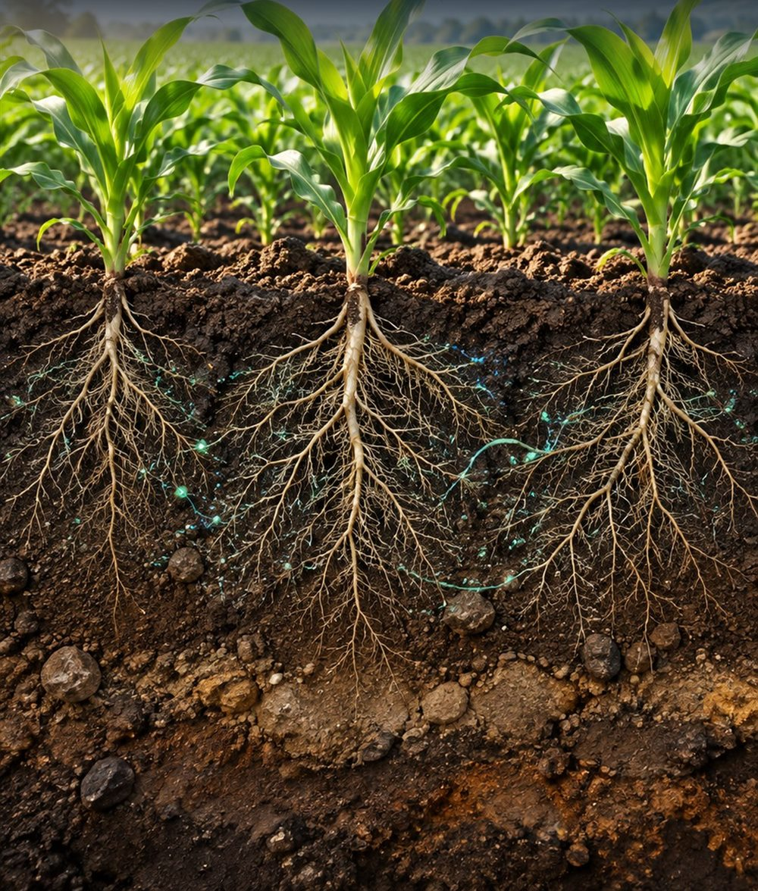
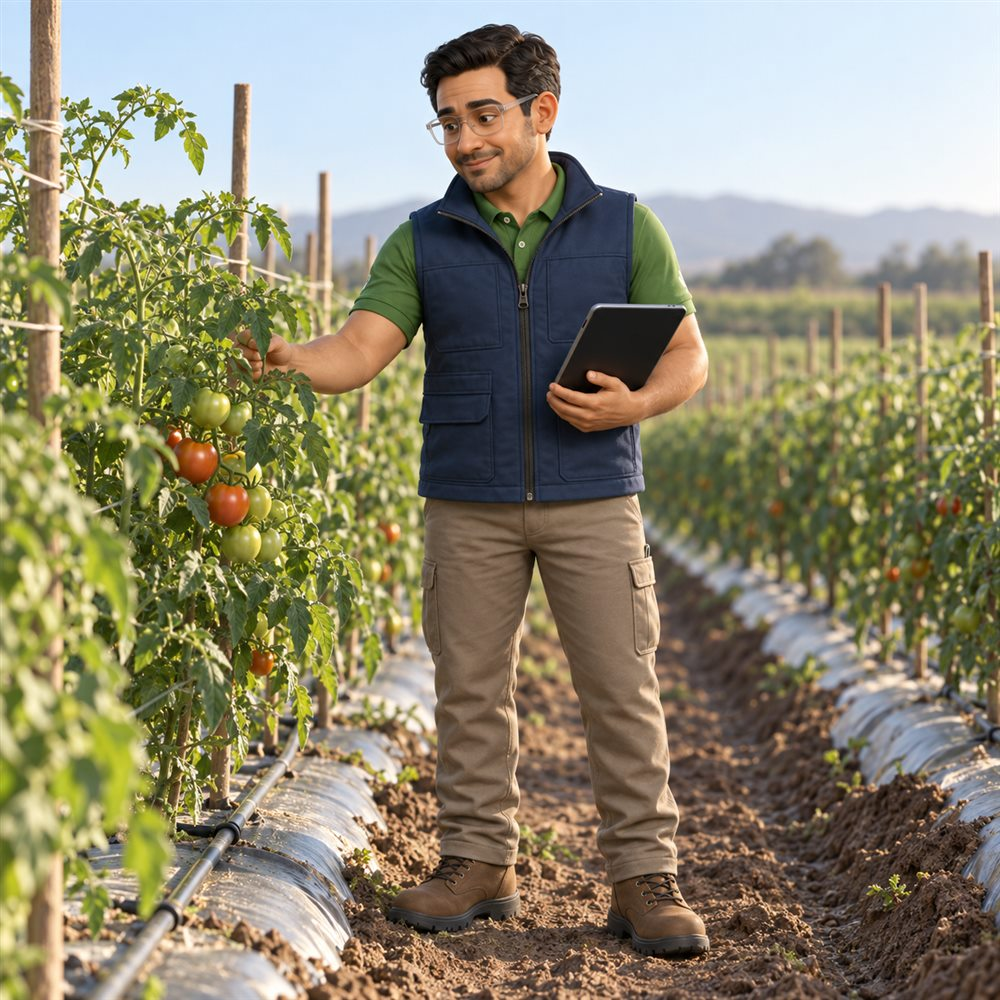
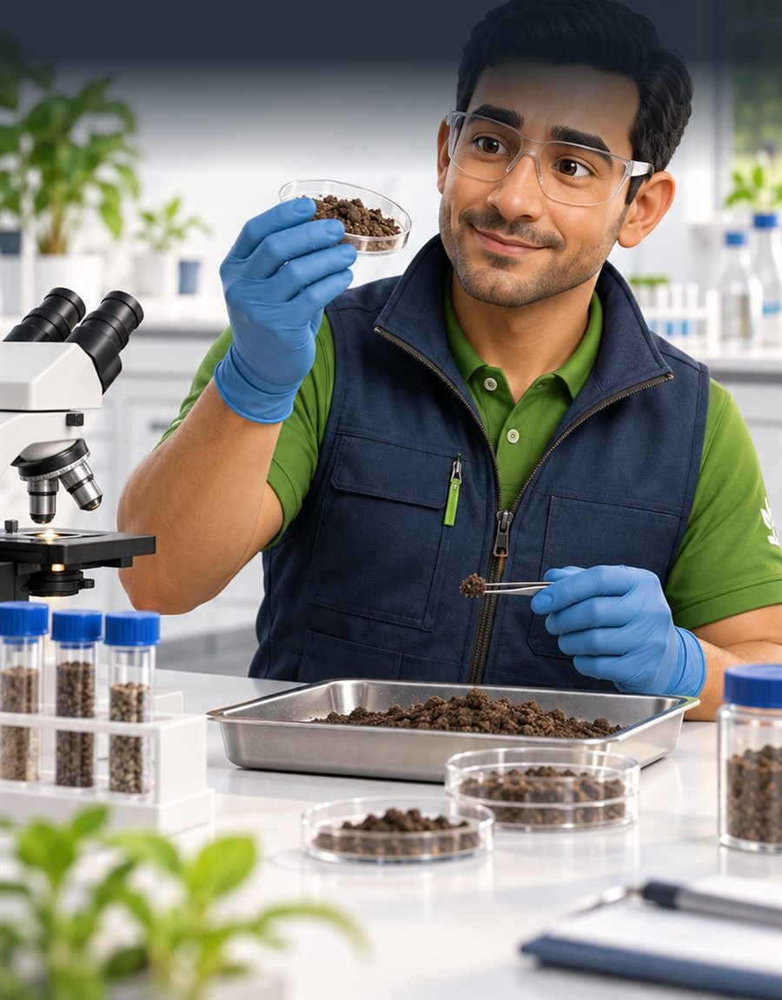
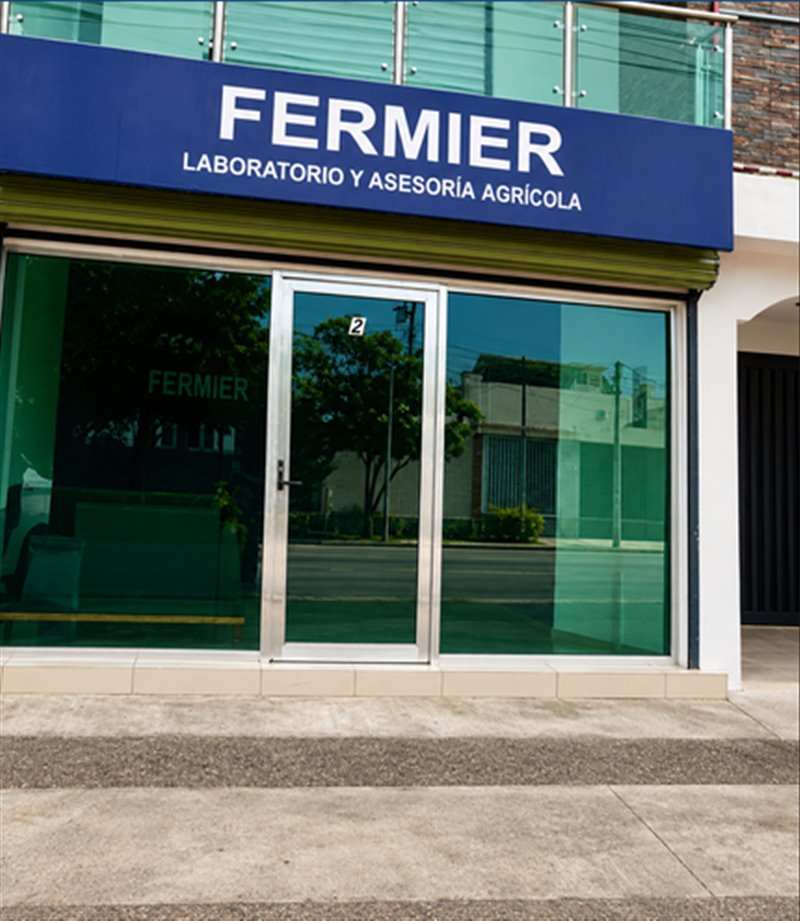

Suelo6–8 días
Análisis de suelo para fitopatógenos
- Qué te dice
- Detecta los hongos y bacterias dañinos que hay en tu suelo.
- Pídelo si
- Tus plantas se marchitan, se caen o no crecen parejo.
$800+ IVA
Análisis de suelo, agua de riego y tejido vegetal, con interpretación técnica de nuestro equipo. Resultados en 2 a 8 días.

Cada análisis, explicado en corto. Solicítalo por WhatsApp.

Cuéntanos qué está pasando en tu cultivo y te decimos qué análisis conviene. Sin compromiso.
Precios en pesos mexicanos más IVA. Pueden cambiar; confirma el precio vigente por WhatsApp antes de entregar tu muestra.
Cuéntanos tu cultivo y qué te preocupa. Te decimos cuál análisis conviene.
Te orientamos para tomarla bien. Cuando sea necesario, vamos a tu campo.
En 2 a 8 días, según el análisis, en formato digital y físico.
Te explicamos los resultados y qué decisiones tomar en tu cultivo.

Además del laboratorio, te acompañamos con asesoría técnica de principio a fin.
Algunos organismos dañan tu cultivo y otros lo protegen. Toca cada uno para ver qué es, qué hace y cómo lo resolvemos.
Microorganismos benéficos para la salud del suelo y de la raíz. Toca un producto para ver su ficha y sus fotos.
Llena estos datos y se abrirá WhatsApp con tu solicitud ya escrita. Así te respondemos directo sobre lo que pides.
